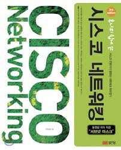

Layer 1(Physical Layer)
랜선, 랜카드는 너무 익숙하고 짜치니 일단 생략.
기본적으로 이더넷 방식을 기준으로 설명.
리피터(Repeater): 신호를 증폭해주는 것
LAN선의 경우에 최대 거리가 100m인 것들이 있다. (데이터의 무결성을 보장할 수 있는 거리인 듯)
이런 장비가 그럼 어떻게 수 십 km 떨어진 곳에 있는 데이터를 받아올 수 있는 것일까?
바로 최대 거리인 100m 내에 리피터라는 장비를 둬서 데이터를 전달만 하는 역할을 하는 걸 보고 리피터라고 한다.
음악 장비에 있어서는 엠프(소리를 크게 내주게 하는 장비) 정도로 이해하면 편할 것 같다.
OSI 7 Layer의 1 Layer(Physical Layer)에 속한다.
허브가 리피터 역할까지 하고 가격도 싸지면서 거의 쓰이지 않는 장비로 알고 있다.
무선랜의 경우 신호의 세기를 증폭시켜주는 중계기/리피터/증폭기 등등으로 쓰이는데 예전에 사용하던 유선랜 리피터와 해주는 역할이 유사하긴 하다.허브(Hub): 멀티포트(Multiport) 리피터
리피터의 역할을 하는데 포트가 여러 개인 것이다.
리피터는 입력한 데이터를 그대로 출력한다고 했고, 허브에서는 멀티포트로 연결된 장비들에게 이 데이터를 그대로 전달하는 역할을 한다.
1번 포트에 연결된 장비가 데이터를 보내면 이더넷 특성상 1번 포트를 제외하고 나머지 모든 포트로 데이터를 뿌리게 된다.
눈치 없는 2번 포트에 연결된 장비가 동시에 데이터를 보내게 되면 이더넷의 특성 상 CSMA/CD 프로토콜을 사용하고 충돌이 발생하게 된다.
이 때 충돌한 두 장비는 다시 눈치게임을 통해 데이터를 뿌리게 된다.
위와 같이 같은 허브에 물려있는 모든 장비는 같은 Collision Domain 상에 존재하게 되는 것이다.
따라서 허브가 엄청 많은 포트를 지원한다고 해서 꼭 좋은 것만은 아니다.
위와 같이 데이터를 어느 한 순간에만 보낼 수 있는 허브를 Shared Hub라고 부르고,
위와 같은 특성 때문에 인터넷 속도를 사실 N빵 했다고 보면 된다.
Collision Domain은 별도의 허브를 쓴다고 해서 해결되는 게 아니라 오히려 Collision Domain의 범위를 늘리는 일이다.
아마 인터넷/IP 공유기가 허브이지 않을까 싶다.모뎀(Modem): 아날로그 신호 <-> 디지털 신호
아날로그 신호(빛, 전기) -> 디지털 신호(0, 1)를 수행하는 장비를 Modulator(변조기)라고 부르고,
반대인 디지털 신호 -> 아날로그 신호를 수행하는 장비를 Demodualtor(복조기)라고 부르고, 이 둘을 합친 게 모뎀이다.
과거에는 전화선으로 연결을 해서 매우 느렸지만 요즘에는 빛을 신호로 사용하는 기가광랜 등등의 등장으로 모뎀 장비도 크게 성장하였다.
Layer 2(Data Link Layer)
브릿지(Bridge): 허브를 이어주는 다리
허브의 단점인 충돌을 피하기 위해 등장한 장비.
브릿지가 포트가 4개라면 여기에 허브를 4개 물릴 수 있고, 각기 다른 Collision Domain을 가진다.
브릿지의 기능 중에 필터링이 있는데, 다른 포트로 못 건너가게 막는 기능이다.
같은 포트 내의 장비끼리 통신인 경우에는 다른 포트로 건너가지 못하게 막고,
이 기능 때문에 서로 다른 Collision Domain을 가지고, 동시에 통신이 가능하게 된다.
만약 다른 포트에 있다면 ‘포워딩’이란 기능을 통해 다리를 건너가게 해주는 것이다.
허브와 달리 L2이기 때문에 L2의 특성인 에러 처리 능력도 가졌다.
하지만 허브는 에러 처리 없이 곧이 곧대로 받으면 되기 때문에 허브 보다는 데이터 처리 속도가 느리다.
스위치의 우수성과 값이 싸짐에 따라서 거의 사장됐다고 보면 된다.스위치(Switch): 브릿지의 진화판
기본적으로 브릿지가 가진 특성을 모두 가지고 있고 다음과 같은 차이점과 값이 싸짐에 따라 브릿지를 대체했다.- 스위치는 프레임 처리 방식이 하드웨어 방식이라 소프트웨어 방식인 브릿지에 비해 훨씬 빠르다.
왜냐하면 처리 절차를 미리 칩에 구워서 만들었기 때문이다. - 브릿지와 달리 각 포트별로 다른 속도를 할당해 줄 수 있다.
- 브릿지보다 포트가 훨씬 많다.
- 프레임을 처리하는 방식이 브릿지는 들어오는 프레임을 전부 받아들인 다음 처리를 시작하는 Store and Forwarding 방식만 지원하지만,
스위치는 프레임의 목적지 주소만을 보고 바로 전송하는 Cut Through 방식이나 앞에 두 개의 방식의 장점을 살린 Fragment Free 방식도 지원한다.
Layer 3(Network Layer)
- 라우터(Router): 통신하는데 최적의 경로를 찾아주는 장비
여러 알고리즘에 따라서 통신하는데 최적의 경로를 찾아주는 장비이다.
Layer 3에서는 IP가 존재하는 계층이라 라우터에서는 IP 주소를 보고 포워딩하지만, 스위치에서는 MAC 주소를 보고 포워딩한다.
라우터의 가장 큰 목적은 외부 네트워크와 통신하기 위해서 쓰인다는 점이다.
따라서 라우터는 두 가지 포트를 가지게 되는데 내부 네트워크(스위치)와 연결하는 포트를 이더넷 인터페이스라고 한다.
다른 하나는 외부 네트워크와 연결하는 시리얼 인터페이스(WAN과의 접속)라고 부른다.
이더넷 인터페이스는 내부 네트워크의 IP 주소를 가지며, 이 주소를 Default Gateway라고 부른다.
대부분 기본적으로192.168.0.1과 같은 공유기 관리자 페이지로 가지는 곳이 바로 Default Gateway이다.
시리얼 인터페이스도 마찬가지로 IP 주소를 부여받고, 스위치에 연결된 모든 장비가 이 IP 주소로 변환되서 나가지 않을까…?
스위치/허브 등등의 경우에는 IP 주소를 할당하지 않아도 되지만 라우터의 경우에는 외부 네트워크와 통신해야하기 때문에 IP 주소를 무조건 할당받아야 한다.
아마 공유기가 라우터의 기능까지 수행하고 있는 건 아닐까 싶다.
또한 요즘에는 라우터와 모뎀의 일체형인 제품들도 나오는 것 같다.